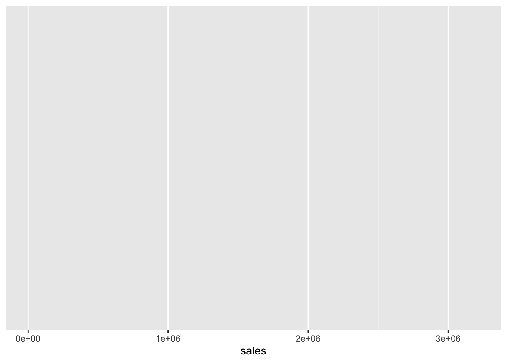

#install.packages("tidyverse") # 初回だけ
library(tidyverse) # 毎回読み込み。4 財務データの取得と可視化
4.1 ディスクロージャー制度の概要とデータの入手先
4.1.1 法定開示と適時開示
| 年次開示 | 四半期開示 | 重要事実 | |
|---|---|---|---|
| 法定開示 | 有価証券報告書 | 四半期報告書 | 臨時報告書 |
| 適時開示 | 決算短信 | 四半期決算短信 | 適時開示 |
4.1.2 財務データの入手先
- EDINET：金融庁が運営する電子開示システムで，全上場企業の法定開示資料をデータベースとして提供
- TDnet：東京証券取引所が運営する電子開示システムで，上場企業の決算短信をデータベースとして提供
XBRL(eXtensible Business Reporting Language)形式で財務諸表などの主要情報を公開しています。XBRLからデータを読み込むスキルは本書の枠を超えるため，ここでは練習用データで分析しますが、立命館大学では日経NEEDSを利用して財務データを収集します。
4.2 Rを利用した財務データの分析
4.2.1 tidyverseパッケージの概要
tidyverseとは，R神Wickham氏が基本コンセプトを設定し，整然データ(tidy data)に対して一貫した記法でデータを扱えるパッケージ群です。 インストールと読み込みは以下の通りです。
tidyverseパッケージを読み込むことで，次の代表的なパッケージが利用できるようになります。 よく使うものは以下のものになります。
ggplot2データの可視化 めっちゃ使うdplyrデータハンドリング めっちゃ使うreadrデータを読み込む めっちゃ使うtidyrtidyデータにもっていく そこそこ使うpurrr関数型プログラミングで使う 慣れてくると使うtibbledata.frameではなくtibbleにする あまり使わないstringr文字列の加工・操作 ちょいちょい使うforcatsファクター型変数の操作 そんなに使わない
4.2.2 財務データの読み込み
「実証会計・ファイナンス」のサポートサイトにある練習用のデータセットch04_financial_data.csvをダウンロードして，自分のPCの作業ディレクトリに置きます。 いまRが作業ディレクトリとしてどこの場所を読み込んでいるのかを確認するにはgetwd()を使います。 作業ディレクトリを変更するときはsetwd()で作業ディレクトリを絶対パスで指定するとよいでしょう。
いままではcsvデータを読み込むために，基本関数のread.csv()を使ってきましたが、ここからはより高速かつオプション指定が柔軟なtidyverse関数群の1つであるreadrパッケージのread_csv()関数を使います。readとcsvの間がピリオド.からアンダースコア_に変わっているので注意してください。 readrパッケージのread_csv()関数は，
- データの読み込みが高速かつ型の推論が柔軟
- 基本の
data.frameではなく，その拡張版であるtibbleで返す - 列名を勝手に変換しない。
- 文字列を勝手にファクター型にしない（
read.csv()だと勝手にファクターになる )。
という利点があります。 松浦は、作業ディレクトリであるフォルダの中にdataフォルダを作成し、そこにcsvファイルを入れています。 そのため、以下のコードではdata/ch04_financial_data.csvのように相対パスでファイルを指定しています。
financial_data <- read_csv("data/ch04_financial_data.csv") # readrを使用
nrow(financial_data) # 行数[1] 7920ncol(financial_data) # 列数[1] 11head(financial_data,5) # 最初の5行# A tibble: 5 × 11
year firm_ID industry_ID sales OX NFE X OA FA OL FO
<dbl> <dbl> <dbl> <dbl> <dbl> <dbl> <dbl> <dbl> <dbl> <dbl> <dbl>
1 2015 1 1 5261. 437. NA 287. 13006. 3543. 4373. 2481.
2 2016 1 1 5949. 564. 50.7 513. 13866. 4642. 4534. 3960.
3 2017 1 1 6505. 691. 29.5 662. 13953. 7744. 5111. 6159.
4 2018 1 1 6846. 751. 86.5 665. 18818. 7285. 5137. 10124.
5 2019 1 1 7572. 959. 298. 660. 18190 9735. 5488. 11362.このfinancial_dataには、11個の変数に観測値が7920個あることがわかります。
year: 年度firm_ID: 企業IDindustry_ID: 産業IDsales: 売上高OX: 事業利益(operating income)NFE: 純金融費用(net financial expenses)X: 当期純利益(net income)OA: 事業資産(operating assets)OL: 事業負債(operating liabilities)FE: 金融資産(financial assets)FO: 金融負債(financial obligations)
このデータフレームの構造を確認します。
glimpse(financial_data)Rows: 7,920
Columns: 11
$ year <dbl> 2015, 2016, 2017, 2018, 2019, 2020, 2015, 2016, 2017, 2018…
$ firm_ID <dbl> 1, 1, 1, 1, 1, 1, 2, 2, 2, 2, 2, 2, 3, 3, 3, 3, 3, 3, 4, 4…
$ industry_ID <dbl> 1, 1, 1, 1, 1, 1, 1, 1, 1, 1, 1, 1, 1, 1, 1, 1, 1, 1, 1, 1…
$ sales <dbl> 5261.40, 5948.96, 6505.06, 6846.38, 7572.24, 7537.63, 3505…
$ OX <dbl> 437.49, 564.14, 691.18, 751.29, 958.53, 778.37, 45.82, 51.…
$ NFE <dbl> NA, 50.667498, 29.543157, 86.486500, 298.049774, -65.45877…
$ X <dbl> 286.64, 513.48, 661.64, 664.80, 660.48, 843.83, 40.07, 49.…
$ OA <dbl> 13005.55, 13865.58, 13952.58, 18818.48, 18190.00, 20462.86…
$ FA <dbl> 3543.43, 4642.16, 7743.99, 7284.72, 9735.13, 10274.25, 225…
$ OL <dbl> 4372.96, 4534.22, 5111.22, 5137.28, 5487.96, 5371.38, 1840…
$ FO <dbl> 2480.72, 3959.70, 6159.02, 10123.91, 11362.22, 13772.15, 2…変数はすべて数値型doubleになっていますが、firm_IDとindustry_IDはカテゴリーを表す変数ですので、数値型ではなくファクター型に変換します。ついでにyearは年度という時間を尺度なので、数値型ではなくfactor型に変換します。ここで重要なのは、yearはただのファクター型ではなく、順序のあるファクター型とすることです。
ここではas.factor()を使います。
# firm_IDとindustry_IDをfactor型に変換
financial_data$year <- factor(financial_data$year,
ordered = TRUE,
levels = c(2015:2020)
)
financial_data$firm_ID <- as.factor(financial_data$firm_ID)
financial_data$industry_ID <- as.factor(financial_data$industry_ID)
# 確認
glimpse(financial_data)Rows: 7,920
Columns: 11
$ year <ord> 2015, 2016, 2017, 2018, 2019, 2020, 2015, 2016, 2017, 2018…
$ firm_ID <fct> 1, 1, 1, 1, 1, 1, 2, 2, 2, 2, 2, 2, 3, 3, 3, 3, 3, 3, 4, 4…
$ industry_ID <fct> 1, 1, 1, 1, 1, 1, 1, 1, 1, 1, 1, 1, 1, 1, 1, 1, 1, 1, 1, 1…
$ sales <dbl> 5261.40, 5948.96, 6505.06, 6846.38, 7572.24, 7537.63, 3505…
$ OX <dbl> 437.49, 564.14, 691.18, 751.29, 958.53, 778.37, 45.82, 51.…
$ NFE <dbl> NA, 50.667498, 29.543157, 86.486500, 298.049774, -65.45877…
$ X <dbl> 286.64, 513.48, 661.64, 664.80, 660.48, 843.83, 40.07, 49.…
$ OA <dbl> 13005.55, 13865.58, 13952.58, 18818.48, 18190.00, 20462.86…
$ FA <dbl> 3543.43, 4642.16, 7743.99, 7284.72, 9735.13, 10274.25, 225…
$ OL <dbl> 4372.96, 4534.22, 5111.22, 5137.28, 5487.96, 5371.38, 1840…
$ FO <dbl> 2480.72, 3959.70, 6159.02, 10123.91, 11362.22, 13772.15, 2…4.3 探索的データ分析
4.3.1 データセットの概要確認
データセットを操作するまえに，データの概要を大まかにつかむ必要があり，この作業を探索的データ分析(exploratory data analysis)といいます。 仮説などを持たず，とりあえず特徴や構造を理解するための方法です。
ノート
引数の型に応じて自動的に最適な結果を返す機能を多態性 (polymorphism)といい，多態性をもつ関数を総称関数(generic function)という。
summary(financial_data) year firm_ID industry_ID sales
2015:1266 1 : 6 3 :1760 Min. : 205
2016:1293 2 : 6 10 :1702 1st Qu.: 16103
2017:1319 3 : 6 7 :1334 Median : 40431
2018:1323 4 : 6 1 :1143 Mean : 166007
2019:1356 5 : 6 9 : 667 3rd Qu.: 118314
2020:1363 7 : 6 8 : 429 Max. :3496433
(Other):7884 (Other): 885
OX NFE X OA
Min. :-353606.7 Min. :-285383.9 Min. :-357624.8 Min. : 217
1st Qu.: 399.3 1st Qu.: -66.4 1st Qu.: 383.3 1st Qu.: 12560
Median : 1602.9 Median : -1.2 Median : 1586.1 Median : 30799
Mean : 7968.9 Mean : 64.0 Mean : 7904.9 Mean : 152273
3rd Qu.: 5260.5 3rd Qu.: 41.4 3rd Qu.: 5204.6 3rd Qu.: 93469
Max. : 398034.5 Max. : 331035.3 Max. : 572588.7 Max. :7987936
NA's :1
FA OL FO
Min. : 288 Min. : 35 Min. : 44
1st Qu.: 6835 1st Qu.: 3965 1st Qu.: 3757
Median : 19095 Median : 10868 Median : 11125
Mean : 80185 Mean : 50261 Mean : 70681
3rd Qu.: 52118 3rd Qu.: 33111 3rd Qu.: 35446
Max. :29250611 Max. :2817975 Max. :7026924
さらに，データセットのある変数に含まれる固有な要素を抽出するには，unique()関数を用います。
unique(financial_data$year) # financial_dataのyear変数に含まれる固有要素[1] 2015 2016 2017 2018 2019 2020
Levels: 2015 < 2016 < 2017 < 2018 < 2019 < 2020# 2015, 2016, 2017, 2018, 2019, 2020固有要素の数を確認するには，unique()関数で取り出した要素の数をlength()関数で返します。 企業-年の企業数と年度数を確認するには次のようにします。
length(unique(financial_data$firm_ID)) # 1515を返す[1] 1515length(unique(financial_data$industry_ID)) # 10[1] 10よってこのデータには10の産業、1515の企業があることが分かります。
4.3.2 欠損データの処理
ほとんどのデータセットには，欠損値(NA)が含まれているため，この欠損値の処理は非常に重要になります。 欠損値の有無を確認するためには，complete.cases()関数を用いるのが便利です。 欠損値が含まれているとFALSEを返し，欠損値がないとTRUEを返します。
head(complete.cases(financial_data)) # 最初の６行の結果を表示[1] FALSE TRUE TRUE TRUE TRUE TRUEsum()関数で，TRUEの個数を数え上げることもできます。
sum(complete.cases(financial_data)) # TRUE/FALSEを1/0に置き換えて合計[1] 7919欠損値の出現に何らかの傾向がある場合，欠損値の削除が生存者バイアス(survivorship bias)をもたらす可能性があります。 たとえば，過去20年間にわたって連結財務諸表データに欠損値が含まれていない上場企業ばかりを分析すると，途中で倒産したり上場したりした企業は削除され，20年間経営し続けている優良企業しかデータに残らない生存者バイアスが発生します。
このようなバイアスを考慮しなくても良いなら，欠損値をもつ個体(unit)のデータ(行)を削除するのが単純な処理となります。 このとき，tidyrパッケージに含まれるdrop_na()関数を用いると簡単に欠損値を含む行を削除できます。 基本関数のna.omit()でもよいですが，tidyr::drop_na()の方がオプションが豊富なのでおすすめです。
nrow(financial_data) # 欠損行を削除する前の行数[1] 7920nrow(drop_na(financial_data)) # 欠損行を削除した場合の行数[1] 7919financial_data <- drop_na(financial_data) # 欠損行を削除した上でデータを上書き
# この作業には注意が必要である。オリジナルデータはそのまま残しておいたほうが良い欠損値を含む行を削除するのではなく，欠損値に適切な推定値を代入することでサンプルサイズを減らさない方法も開発されていますが，欠損値の出現を説明する確率モデルを仮定し，その推定値を求める必要があります。
ノート
詳しくは髙橋・渡辺 (2019) 欠損データ処理：Rによる単一代入法と多重代入法 を参照してください。
さらに欠損値についての議論では，星野・岡田 (2016)「欠測データの統計科学―医学と社会科学への応用」岩波書店がめちゃめちゃ有用です。
4.4 データの抽出とヒストグラムによる可視化
4.4.1 条件にあうデータの抽出方法
教科書では複数の方法が紹介されているが，このメモではtidyverseパッケージを用いた方法だけ取り上げます。具体的には，データベース操作のパッケージであるdplyrの中のfilter()関数について説明します。 さらにmagrittrを用いたパイプ演算子%>%を用いたデータの受け渡しの記法を活用して，可読性の高いソースコードを書くことも紹介します。 ここではdplyrパッケージのfilter()関数であることを明示的に示すため、dplyr::filter()と書いていますが、dplyrパッケージを読み込んでいる場合はfilter()と書いても同じです。
financial_data_2015 <- financial_data %>%
dplyr::filter(year == 2015) # year変数が2015のデータを抽出filter()で条件を満たすデータのみを取り出し，それをfinancial_data_2015に代入している。
パイプ演算子%>%は左のオブジェクトを右の関数の第1引数に代入する，という処理を行います。 つまり，x %>% filter(year == 2015)は，filter(x, year == 2015)と同じ意味になります。 パイプ演算子を使うことで，データが次の処理に受け渡されていくプロセスが読みやすくなります。たとえば、
- 欠損値を除去して，
- 2015年のデータを抽出し，
- ROEを計算して，
- 産業ごとに平均値を出す
というよく使いそうな処理を行いたい場合，tidyverseなら次のように書きます。
financial_data %>%
drop_na() %>% # 欠損値を除去し，
filter(year == 2015) %>% # 2015年のデータを抽出し，
mutate(ROE = earnings / equity) %>% # ROEを変数を作り，
group_by(industry) %>% # 業種コードごとに
summarise(mean_ROE = mean(ROE)) # mean()でROE平均を計算基本関数の場合は、
financial_data <- na.omit(financial_data)
financial_data_2015 <- financial_data[financial_data$year == 2015, ]
financial_data_2015$ROE <- financial_data_2015$earnings / financial_data_2015$equity
mean_ROE_by_industry <- aggregate(financial_data_2015$ROE,
by = list(financial_data_2015$industry),
FUN = mean)となりますので、上の方が読みやすいことがわかります。
4.4.2 ヒストグラムによる売上高の可視化
4.4.2.1 ヒストグラム
ヒストグラム(histogram)は，データの分布を可視化するためのグラフです。 ヒストグラムは，連続データを区間に分けて，区間ごとのデータの個数を棒グラフで表現したものです。したがってヒストグラムの棒の高さは、その区間に含まれるデータの個数を表します。
たとえば、例として生徒100人の身長データがあるとします。 この身長データをRで生成するには，rnorm()関数を使います。
# 平均170cm，標準偏差5cmの正規分布から100個のデータを生成
height <- rnorm(100, mean = 170, sd = 5)
print(height) [1] 169.6924 174.5469 176.3546 171.0446 175.6103 170.4743 164.5788 166.0442
[9] 161.9346 163.7407 157.3900 179.8433 168.5600 172.7645 172.0916 162.9906
[17] 164.9894 176.5034 174.0555 176.4578 164.5827 165.0025 168.9452 172.8089
[25] 174.2949 171.0870 175.8524 180.7838 164.3101 178.1985 164.9176 176.0124
[33] 170.4831 171.7323 170.9961 177.1232 169.7548 168.2287 169.0044 175.0003
[41] 169.3694 172.1525 167.8356 171.3804 170.3527 168.2850 170.3796 162.3475
[49] 164.0759 162.8132 168.2428 172.1306 173.8485 172.2481 167.0463 177.1396
[57] 175.6116 170.5064 162.7817 162.8524 169.9775 171.3020 169.9325 171.4664
[65] 180.8614 161.3915 168.1194 176.5041 177.4252 162.1188 171.4196 175.6819
[73] 167.0647 169.8203 169.9235 167.6972 164.7486 168.0285 172.3546 173.3254
[81] 169.8629 164.4961 174.7364 166.4179 177.7701 175.6074 179.5678 167.9054
[89] 161.5347 166.5031 171.4887 173.6740 173.6661 168.2252 164.6050 168.9659
[97] 166.2311 165.0904 170.7562 177.4817100個のデータを眺めていても、なかなか特徴をつかめませんよね。そこでこの身長という連続データを5センチごとの区間に分けます。 たとえば、165cm以上、170cm未満の区間には何人の生徒がいるのか、170cm以上、175cm未満の区間には何人の生徒がいるのか、というように区間ごとのデータの個数を数えます。 このとき、区間の幅を5cmにするか、10cmにするか、20cmにするか、ということは、データの特徴をつかむ上で重要なことです。 区間の幅を大きくすると、データの特徴がざっくりとしかつかめません。 一方、区間の幅を小さくすると、データの特徴が細かくつかめますが、データの個数が少ない区間が多くなり、データの特徴をつかむのに時間がかかります。 やってみましょう。
hist(height, breaks = seq(150, 190,by = 1)) # 区間の幅を1cmにするhist(height, breaks = seq(150, 190,by = 5)) # 区間の幅を5cmにするhist(height, breaks = seq(150, 190,by = 10)) # 区間の幅を10cmにするどのヒストグラムがデータの特徴を最も良く表しているのか、を考えて区間幅を設定しましょう。
4.4.2.2 ggplotでヒストグラム
ヒストグラムを書くためには，基本関数のhist()が最も簡単ですが，より高性能なggplot2を用いたヒストグラムの書き方を説明します。 ここでは、上で作成した2015年のデータfinancial_data_2015を使って、売上高のヒストグラムを書きます。
ggplot2の書き方は少し特殊ですが、慣れてくると非常に便利です。 ggplot2ではレイヤー(階層)を上から重ねていくようにグラフを作っていきます。 まずggplot()関数でグラフの土台を作ります。ggplot()に入れるデータの型はdata.frameでなければならないので注意しましょう。
ggplot()の中で読み込むデータを指定して、gというオブジェクトに代入し、それを表示させます。
g <- ggplot(data = financial_data_2015) # グラフにしたいデータを指定
print(g) # 出力
真っ白で何も出力されていませんが、financial_data_2015というデータフレームを指定して、グラフの土台を作りました。
次に軸の設定をします。ヒストグラムは1変数のグラフなのでx軸のみを設定します。aes()関数で変数を指定します。先ほど作成したgにaes()関数を+で追加していきます。
g <- g + aes(x = sales) # x軸を売上高にする
print(g) # 出力
横軸が表示されました。 この上に、ヒストグラムを書くためにgeom_histogram()関数を追加します。 ggplot2パッケージでは、geom_***の形でグラフを指定します。例えば、
geom_bar棒グラフgeom_point散布図geom_line折れ線グラフgeom_boxplot箱ひげ図geom_histogramヒストグラム
あたりがよく使われるグラフです。
g <- g + geom_histogram() # グラフはヒストグラム
print(g)ここでコンソールに，
stat_bin()usingbins = 30. Pick better value withbinwidth.
というメッセージが出ますが、これは「何も指定されなかったので，ヒストグラムのビンの数を30にして作図したけど，オプションのstat_bin()で適切な区間幅をbinwidthで設定してね」ということです。無視しても大丈夫です。
x軸が指数表記となっていて見づらいので，scales()関数を使って表記を変更します。
g <- g + scale_x_continuous(label = scales::label_comma()) # 3桁ごとにコンマで区切った数値で表示
print(g)横軸の数値が変化したことが分かります。
また、小数ながら非常に大きな売上高をもつ企業があるため，ヒストグラムの形が左側に集まるように歪んでいます。 そこで売上高を自然対数に変換して，分布の歪みを修整したヒストグラムを書いてみます。 データを変更するので、最初から全部書きます。
g <- ggplot(financial_data_2015) + # データの読み込み
aes(x = log(sales)) + # x軸を売上の自然対数に
geom_histogram() # ヒストグラム
print(g) # 出力うまくいきました。 ついでにいろいろなオプションをつけてみます。
library(ggthemes)
mystyle <- list (# ggplotのテーマ
theme_calc(), # ggthemesパッケージ
scale_colour_calc(), # ggthemesパッケージ
theme(
text = element_text(
size=12, # フォントサイズ
family = "HiraKakuProN-W3" # ヒラギノフォント
)
)
)g <- g + xlab("売上高の自然対数") + ylab("度数") + mystyle # 先ほどのスタイルを適用
print(g)4.5 データの集計と折れ線グラフによる可視化
4.5.1 dplyrを用いた集計
もっとデータを加工して、データの特徴をつかむグラフを作成してみます。 データを加工するために、非常に便利なパッケージであるtidyverseのdplyrを用いたデータ加工を説明します。dplyrでよく使う関数に、
group_by()：グループ化summarise()： 集計mutate()： 変数の追加filter()： データの抽出
があります。これらの関数を組み合わせることで、データの加工が非常に簡単にできます。たとえば、financial_dataに含まれる売上高を年度ごとに集計してみましょう。dplyrのgroup_by()関数を使うと、変数を指定してデータをグループ化することができます。たとえば、yearを指定すると、年度ごとにデータをグループ化します。 group_by()でグループ化したあとに、summarise()関数を使って平均や分散などの統計量を計算します。
N_firms_by_year <- financial_data %>%
group_by(year) %>% # 年度ごとにグループ化
summarize( # 以下の統計量を計算
N_firms = n(), # データ個数 n()
mean_sales = mean(sales) # 売上高の年度平均 mean()
)これでN_firms_by_yearというオブジェクトに、financial_dataを年度ごとにグループ化して、年度ごとの企業数N_firmsと平均売上高mean_saleを計算したデータが入っています。 2015年から2020年の6年間のデータがあるので、6行のデータが入っているはずです。 中身を確認しておきましょう。
glimpse(N_firms_by_year)Rows: 6
Columns: 3
$ year <ord> 2015, 2016, 2017, 2018, 2019, 2020
$ N_firms <int> 1265, 1293, 1319, 1323, 1356, 1363
$ mean_sales <dbl> 173614.9, 173359.5, 170010.9, 157995.4, 160928.2, 161043.7以下の変数について6個のデータが入っていることがわかります。
year: 年度 (ord)N_firms: 企業数 (int)mean_sales: 平均売上高 (dbl)
ノート
関数型プログラミング(functional programming)は，現代的なプログラミング・パラダイムの1種であり，定義された関数を用いて各データに対して行いたい処理を切り分ける。Rではapply系関数として，様々な関数が用意されている。tidyverse群では，purrrがある。ちょっと難しいですがpurrr超便利
4.5.2 折れ線グラフによる上場企業数の可視化
データの成形が終わったので，折れ線グラフを作っていきます。 ここではx軸(横軸)を年度year，y軸(縦軸)を上場企業数N_firmsとする折れ線グラフを作ってみます。 折れ線グラフを作るにはgeom_line()関数を使います。
g <- ggplot(N_firms_by_year) +
aes(x = year, y = N_firms, group=1) +
geom_line()
g <- g + labs(x = "Year", y = "Number of Firms") + mystyle# 軸ラベル
print(g)ここで突然現れたgroup = 1というaes()のオプションですが、これはすべてのデータが同じグループに属していることを指定しています。 x軸にファクター型を指定する場合、group = 1を指定しないと、x軸の値ごとに別のグループとして認識されてしまい、折れ線グラフがうまく描けません。
4.6 変数の作成とヒストグラムによる可視化
tidyverseのdplyrパッケージのmutate()関数を用いれば，パイプ演算子%>%を用いて可読性の高いシンプルな書き方で、新しい変数を作成することができます。
ここでは，ROE(Return on Equity)を計算してみます。 ROEの定義は，
ROE_t = \frac{X_t}{BE_{t-1}}
となります。 分子のX_tはt期の当期純利益，分母のBE_{t-1}はt期首の株主資本です。 練習用データであるfinancial_date.csvには，当期純利益はXという列名で収録されていますが、株主資本の列はありません。 よってデータから株主資本は次のように計算します。
BE_t = \underbrace{(OA_t - OL_t)}_{NOA_t} - \underbrace{(FO_t - FA_t)}_{NFO_t}
この計算を行い，新しい変数BEをデータフレームに加えるには，dplyr::mutate()を使います。
financial_data <- financial_data %>%
mutate(
BE = (OA - OL) - (FO - FA) # 新たなBE変数が加わる
)分母の株主資本は期首，つまり前期末の数値を用いる必要があります。 1期前の値を参照するには，lab()関数を用います。 ただ，クロスセクションのデータで普通にlag()関数を用いると，次のように別の企業のデータを参照してしまいます。
financial_data <- financial_data %>%
mutate(
lag_BE = lag(BE),
ROE = X / lag_BE # これはダメ
)
head(financial_data, 10)[,c("firm_ID", "year", "BE","lag_BE","ROE")]# A tibble: 10 × 5
firm_ID year BE lag_BE ROE
<fct> <ord> <dbl> <dbl> <dbl>
1 1 2016 10014. NA NA
2 1 2017 10426. 10014. 0.0661
3 1 2018 10842. 10426. 0.0638
4 1 2019 11075. 10842. 0.0609
5 1 2020 11594. 11075. 0.0762
6 2 2015 1055. 11594. 0.00346
7 2 2016 1082. 1055. 0.0468
8 2 2017 1135. 1082. 0.0702
9 2 2018 1184. 1135. 0.0763
10 2 2019 1237. 1184. 0.0770 結果のfirm_IDが2の企業の2015年のROEを計算するには，1期前の企業1の2014年の株主資本を参照する必要があるけれど，2014年のデータは存在しないため、企業2の2015年度のROEは欠損値NAになっている必要があるのに、lag()関数が1つ前の企業1の2020年の株主資本を参照してしまっています。 ROEを企業ごとに計算するために，dplyr::group_by()を使って，計算を企業群ごとに行うことで、この問題を解決できます。
financial_data <- financial_data %>%
group_by(firm_ID) %>% # firm_IDごとに以下の処理を繰り返す
mutate(
lagged_BE = lag(BE), # lag関数で前期の値を取り出す
ROE = X / lagged_BE # これはOK
) %>%
ungroup() # group化を解除
head(financial_data, 10)[,c("firm_ID", "year", "BE","lagged_BE","ROE")]# A tibble: 10 × 5
firm_ID year BE lagged_BE ROE
<fct> <ord> <dbl> <dbl> <dbl>
1 1 2016 10014. NA NA
2 1 2017 10426. 10014. 0.0661
3 1 2018 10842. 10426. 0.0638
4 1 2019 11075. 10842. 0.0609
5 1 2020 11594. 11075. 0.0762
6 2 2015 1055. NA NA
7 2 2016 1082. 1055. 0.0468
8 2 2017 1135. 1082. 0.0702
9 2 2018 1184. 1135. 0.0763
10 2 2019 1237. 1184. 0.07702015年のROEが欠損値になっており、正しい計算ができています。 クロスセクション分析におけるlag()関数の問題点を分かりやすくするために、上のようにlagged_BE変数とROE変数を別々に作成しましたが、通常は次のように書きます。
financial_data <- financial_data %>%
group_by(firm_ID) %>% # firm_IDごとに以下の処理を繰り返す
mutate(
ROE = X / lag(BE) # これで一気に計算する方がOK
) %>%
ungroup() # group化を解除これでROEの計算ができので、次にROEのヒストグラムを作ってみます。
g <- ggplot(financial_data) + # データの選択
aes(x = ROE) + geom_histogram()
g <- g + scale_x_continuous(limits = c(-0.3, 0.5)) # x軸の範囲を調整
print(g)ROEの分布が分かりました。赤字企業が分かりやすいように、ROEがゼロのところに縦線を引いてみます。 縦線を引くにはgeom_vline()を使い、横線を引くにはgeom_hline()を使います。
g <- g + geom_vline(xintercept = 0, color = "red") # x軸に縦線を引く
print(g)4.7 グループごとの集計とランク付け
4.7.1 産業ごとのROE平均値と棒グラフによる可視化
グループごとに平均値を出すといった処理は，dplyrのgroup_by()とsummarise()を用いることで簡単にできます。
ここでは、産業ごとにROEの平均値と標準偏差を求めてみます。ROEには欠損値が含まれているため、mean()関数を使うとNAが返ってきます。NAを無視して平均値を計算するには、mean()関数のオプションna.rm = TRUEを指定します。
df_ind <- financial_data %>%
group_by(industry_ID) %>% # 集計したいグループを指定
summarize(
mean_ROE = mean(ROE, na.rm = TRUE), # 産業平均
sd_ROE = sd(ROE, na.rm = TRUE) # 産業標準偏差
)
glimpse(df_ind)Rows: 10
Columns: 3
$ industry_ID <fct> 1, 2, 3, 4, 5, 6, 7, 8, 9, 10
$ mean_ROE <dbl> 0.07731106, 0.10761577, 0.07548896, 0.07371925, 0.08570296…
$ sd_ROE <dbl> 0.09264764, 0.09530125, 0.05569899, 0.04676826, 0.04859797…10の産業ごとに統計量を計算したので、10行のデータが返ってきました。 このデータを用いて産業ごとのROE平均の棒グラフを作成してみます。
# 作図
ggplot(df_ind) + # データフレームを指定
aes(x = industry_ID, y = mean_ROE) + # 変数を2つ指定
geom_col() + # 棒グラフ geom_bar()もあるけどこっち
labs(x = "産業ID", y = "産業平均ROE") + # ラベル設定
scale_y_continuous(expand = c(0,0)) + mystyle # グラフの原点0,0に設定教科書では，パイプ処理%>%で直接ggplot()にデータフレームを渡していますが，個人的に可読性が低くなりオススメできないので，上の例ではデータ操作と作図を分けて書きました。 好みの問題なので、どちらでも構いません。
次に、2020年度の産業別ROEランキングを作ってみます。 ROEを大きい順にならべて、一番大きい企業に1、2番目の企業に2、という風にランキングを表す変数を作成するには、rank(desc())を使います。desc()は降順に並べ替える関数です。
下のソースコードでは、前半のまとまりで、以下の処理を行ったデータを新しいデータフレームROE_rank_dataに代入しています。
financial_dataの中から2020年度のデータを抽出し、- 必要な変数として
firm_ID、industry_ID、ROEの3つを選択し、 industry_IDごとにグループ化して、mutate()関数でROE_rank変数を作成し,ungroup()関数でグループ化を解除しています。
後半のまとまりでは、上で作成したROE_rank_dataに対して、
- 産業ごとのROEランキング第1位の企業を抽出し、
- ROEが大きい順に並べ替えて、
- それを
knitr::kable()関数で表として出力
という処理をしています。
# 2020年度の産業内のROEランキングの変数を作成
ROE_rank_data <- financial_data %>%
filter(year == 2020) %>% # 2020年度データを抽出
select(firm_ID, industry_ID, ROE) %>% # 必要な変数を選択
group_by(industry_ID) %>% # 産業コードごとに以下の処理を実行
mutate(
ROE_rank = rank(desc(ROE)) # ROE_rank変数を降順で作成
) %>%
ungroup()# グループ化を解除
print(ROE_rank_data)# A tibble: 1,363 × 4
firm_ID industry_ID ROE ROE_rank
<fct> <fct> <dbl> <dbl>
1 1 1 0.0762 85
2 2 1 0.0728 90
3 3 1 0.119 36
4 4 1 0.0216 154
5 5 1 0.113 39
6 7 1 0.00379 167
7 8 1 0.388 1
8 9 1 0.0913 68
9 10 1 0.111 44
10 11 1 0.130 28
# ℹ 1,353 more rows上の処理により、financial_dataのデータフレームにROE_rankという変数が追加して、ROE_rank_dataという新しいオブジェクトに代入しました。
ROE_rank_data %>%
filter(ROE_rank == 1) %>% # 各産業のランク1のものを抽出
arrange(desc(ROE)) %>% # ROEが大きい順
knitr::kable(booktabs = TRUE, # ここから下は表の装飾
caption = "2020年度産業別ROEランキング第1位企業",
position = "h!" # 表示場所はここに
)| firm_ID | industry_ID | ROE | ROE_rank |
|---|---|---|---|
| 929 | 7 | 0.5641813 | 1 |
| 475 | 3 | 0.4975356 | 1 |
| 8 | 1 | 0.3882552 | 1 |
| 242 | 2 | 0.3749986 | 1 |
| 661 | 5 | 0.2673141 | 1 |
| 1042 | 8 | 0.2559963 | 1 |
| 1380 | 10 | 0.2497929 | 1 |
| 1167 | 9 | 0.2346232 | 1 |
| 619 | 4 | 0.1491307 | 1 |
| 719 | 6 | 0.1422026 | 1 |
industry_IDが7の産業の中のfirm_IDが929の企業のROEが0.5641813ということがわかりました。 この企業は、financial_dataの中でどのような企業なのかを調べてみましょう。
financial_data %>%
filter(firm_ID == 929) %>% # firm_IDが929の企業を抽出
select(firm_ID, industry_ID,sales,OX,BE, ROE) %>% # 必要な変数を選択
knitr::kable(booktabs = TRUE, # ここから下は表の装飾
caption = "企業929のROE",
position = "h!" # 表示場所はここに
)| firm_ID | industry_ID | sales | OX | BE | ROE |
|---|---|---|---|---|---|
| 929 | 7 | 10696.59 | -3.23 | 1134.92 | NA |
| 929 | 7 | 12423.11 | 17.16 | 971.44 | 0.0297113 |
| 929 | 7 | 8148.15 | -48.69 | 980.28 | -0.0437907 |
| 929 | 7 | 8173.33 | -687.52 | 668.91 | -0.7019219 |
| 929 | 7 | 1562.78 | 132.68 | 804.05 | 0.2020302 |
| 929 | 7 | 5832.03 | 490.84 | 1257.68 | 0.5641813 |
業績のばらつきが大きく、ROEも乱高下する企業であることが分かりました。
4.8 上級デュポン・モデルによるROEの分析とその可視化
上級デュポン・モデルとは，次式で表されるROEの分解式です。
\begin{aligned} ROE_t := \frac{X_t}{BE_{t-1}} &= \underbrace{\frac{OX_t}{NOA_{t-1}}}_{RNOA_t} + \underbrace{\frac{NFO_{t-1}}{BE_{t-1}}}_{FLEV_{t-1}} \times \left[ \frac{OX_t}{NOA_{t-1}} - \frac{NFE_t}{NFO_{t-1}} \right] \end{aligned}
各変数の意味は以下の通りです。 - X : 当期純利益(net income) - BE : 株主資本(book of equity) - OX : 事業利益(operating income) - NOA : 純事業資産(net operating assets) - NFO : 純金融負債(net financial obligations) - NFE : 純金融費用(net financial expenses)
RNOA_tは，ATO_tとPM_tとに分割できます。
\underbrace{\frac{OX_t}{NOA_{t-1}}}_{RNOA_t} = \underbrace{\frac{sales_t}{NOA_{t-1}}}_{ATO_t} \times \underbrace{\frac{OX_t}{sales_t}}_{PM_t}
いくつかの変数は，元のデータには含まれていないので，与えられたデータから計算する必要があります。 dplyr::mutate()関数を用いて新しい変数を作成し，データフレームに追加します。 lag()で前期末(つまり当期首)の値を取得するため，group_by()関数で企業ごとにグループ化しています。
financial_data <- financial_data %>%
group_by(firm_ID) %>% # 企業IDごとに以下の計算を行う。
mutate(
NOA = OA - OL, # 純事業資産 = 事業資産 - 事業負債
RNOA = OX / lag(NOA), # 会計上の事業リターン
PM = OX / sales, # 利ざや profit margin
ATO = sales / lag(NOA), # 純事業資産回転率
NFO = FO - FA, # 純金融負債 = 金融負債 - 金融資産
lagged_FLEV = lag(NFO) / lagged_BE, #期首財務レバレッジ
NBC = NFE / lag(NFO), # 債権者のリターン net borrowing cost
ROE_DuPont = RNOA + lagged_FLEV * (RNOA - NBC) # 上級デュポン・モデルによるROE
) %>%
ungroup()ROEの分解式が合っているかどうかを確認するため，all.equal()関数を使って，第1引数と第2引数が等しいかどうかを判定してみます。 普通に計算したROEと上級デュポン・モデルの分解したものから計算したROE_DuPointとの比較しています。
all.equal(financial_data$ROE, financial_data$ROE_DuPont)[1] "Mean relative difference: 4.396878e-06"となり，差の平均は4.396878 \times 10^{-6}となり，ほぼ0となっていることから，上級デュポン・モデルの分解式が正しいことが確認できます。 完全にゼロにならない理由は計算の過程で生じる丸め誤差によるものです。
4.8.1 箱ひげ図による産業別比較
産業別で利ざやPMがどのように分布しているのかを調べるために，箱ひげ図(box plot)を作ってみます。 箱ひげ図は，データの分布を可視化するためのグラフで，第1四分位点，中央値，第3四分位点，(異常値をのぞく)最大値，(異常値をのぞく)最小値を表現できる，非常に情報量の多いグラフです。
ggplot2パッケージのgeom_boxplot()関数を用いることで，データフレームから箱ひげ図を作図できます。
先に作成したデータフレームfinancial_dataを用いて，PMの箱ひげ図を作成してみましょう。 あまり多くの箱ひげ図を作っても見づらくなるので，最終年度のデータ で，産業IDが2〜6までの企業に限定します。
df_2020 <- financial_data %>%
filter(
year == 2020, # 最終年度
industry_ID %in% 2:6 # 産業コードが2から6
)
g <- ggplot(df_2020) +
aes(x = industry_ID, y = PM, fill = industry_ID) +
geom_boxplot() # 箱ひげ図
g <- g + labs(x = "Industry ID") + mystyle
print(g)箱ひげ図から，産業ごとに利ざやの分布が異なることがわかります。とりわけ産業3は利ざやの散らばりが大きく，産業4は非常に散らばりが小さいことが分かります。
4.8.2 散布図による産業別比較
次に産業ごとに ATO(純事業資産回転率)と PM(売上高事業利益率)がどう分布しているか散布図を書いてみます。 ここでは異常値の影響を受けにくい統計量である中央値(median)を計算し，散布図を作成してみます。
df_ind_median <- financial_data %>%
group_by(industry_ID) %>%
summarise(
median_ATO = median(ATO, na.rm = TRUE), # ATOの中央値
median_PM = median(PM, na.rm = TRUE) # PMの中央値
)
g <- ggplot(df_ind_median) +
aes(x = median_ATO, y = median_PM, label = industry_ID) + # 散布図
geom_point() + # 散布図
geom_text(vjust=-1) +
xlab("純事業資産回転率(ATO)の中央値") + ylab("売上高事業利益率(PM)の中央値") + mystyle# ラベル
print(g)この産業ごとに計算された中央値のデータを用いて，線形回帰直線を引いて，ATOとPMの関係を見てみます。
g <- g + geom_smooth(method = "lm", se = FALSE) # 線形回帰直線を追加
print(g)いい感じですが，会計学入門(1.3.4節)で学習したATO \times RM = RNOAという関係のとおり，データからもATOとPMとの間にトレードオフの関係があることが予想されています。 もし理論どおりの関係であればデータはATO = RNOA / PMといった反比例の関係になるはずです。これを示すため，RNOAを一定としたときのATOとPMの関係，つまりを図に書き込んでみます。 関数をグラフとして図に追加するためにstat_function()関数を用います。
median_RNOA <- median(financial_data$RNOA, na.rm = TRUE) # 全データから計算したRNOAの中央値
g <- g + stat_function(
fun = function(x) median_RNOA / x,
linetype = "longdash",
color = "red") # 反比例の関数を追加
print(g)かなりあてはまりが良さそうな線が引けました。 このように，データを可視化することで，理論とデータの整合性を確認することができます。